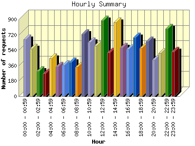

Report generated by Analog 6.0 and Report Magic 2.21
|
Web Server Statistics for "Harish Narayanan (hnarayan) - January 2006" Report generated by Analog 6.0 and Report Magic 2.21 |
The Hourly Summary identifies the level of activity broken down by each hour. Remember that one page hit can result in several server requests as the images for each page are loaded. This summary also compares the level of activity during working hours and after hours as a total for the report time frame.


| Hour | Number of requests | Number of bytes transferred | Percentage of the bytes | Percentage of the requests | |
|---|---|---|---|---|---|
| 1. | 00:00 - 00:59 | 665 | 27.657 MB | 4.49% | 5.05% |
| 2. | 01:00 - 01:59 | 557 | 24.360 MB | 3.95% | 4.23% |
| 3. | 02:00 - 02:59 | 297 | 20.951 MB | 3.40% | 2.25% |
| 4. | 03:00 - 03:59 | 270 | 14.849 MB | 2.41% | 2.05% |
| 5. | 04:00 - 04:59 | 447 | 26.801 MB | 4.35% | 3.39% |
| 6. | 05:00 - 05:59 | 349 | 12.537 MB | 2.04% | 2.65% |
| 7. | 06:00 - 06:59 | 365 | 19.769 MB | 3.21% | 2.77% |
| 8. | 07:00 - 07:59 | 401 | 18.682 MB | 3.03% | 3.04% |
| 9. | 08:00 - 08:59 | 341 | 19.075 MB | 3.10% | 2.59% |
| 10. | 09:00 - 09:59 | 728 | 25.127 MB | 4.08% | 5.52% |
| 11. | 10:00 - 10:59 | 635 | 19.502 MB | 3.17% | 4.82% |
| 12. | 11:00 - 11:59 | 591 | 25.314 MB | 4.11% | 4.49% |
| 13. | 12:00 - 12:59 | 891 | 44.052 MB | 7.15% | 6.76% |
| 14. | 13:00 - 13:59 | 513 | 23.580 MB | 3.83% | 3.89% |
| 15. | 14:00 - 14:59 | 868 | 37.611 MB | 6.10% | 6.59% |
| 16. | 15:00 - 15:59 | 570 | 21.748 MB | 3.53% | 4.33% |
| 17. | 16:00 - 16:59 | 550 | 30.109 MB | 4.89% | 4.17% |
| 18. | 17:00 - 17:59 | 688 | 44.268 MB | 7.18% | 5.22% |
| 19. | 18:00 - 18:59 | 565 | 21.783 MB | 3.54% | 4.29% |
| 20. | 19:00 - 19:59 | 641 | 29.395 MB | 4.77% | 4.86% |
| 21. | 20:00 - 20:59 | 426 | 20.108 MB | 3.26% | 3.23% |
| 22. | 21:00 - 21:59 | 505 | 25.507 MB | 4.14% | 3.83% |
| 23. | 22:00 - 22:59 | 792 | 29.356 MB | 4.76% | 6.01% |
| 24. | 23:00 - 23:59 | 523 | 34.024 MB | 5.52% | 3.97% |
| Work Hours (8:00am-4:59pm) | 5,687 | 246.117 MB | 39.94% | 43.16% | |
| After Hours (5:00pm-7:59am) | 7,491 | 370.047 MB | 60.06% | 56.84% | |
This report was generated on April 27, 2006 10:34.
Report time frame January 1, 2006 00:16 to January 31, 2006 23:58.
| Web statistics report produced by: | |
 Analog 6.0 Analog 6.0 |  Report Magic 2.21 Report Magic 2.21 |